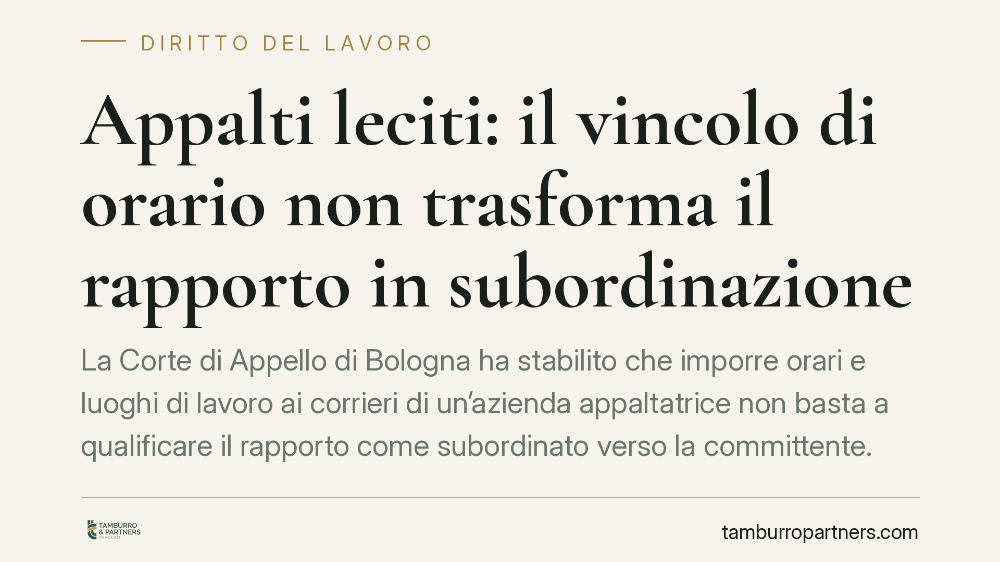

Appalti leciti: il vincolo di orario non trasforma il rapporto in subordinazione
La Corte di Appello di Bologna ha stabilito che imporre orari e luoghi di lavoro ai corrieri di un'azienda appaltatrice non basta a qualificare il rapporto come subordinato verso la committente. Una pronuncia che ridisegna il confine tra appalto genuino e intermediazione illecita di manodopera, con effetti diretti su committenti, appaltatori e lavoratori del settore logistica.

Il caso
Un gruppo di autisti aveva chiesto di essere riconosciuto come dipendente diretto dell'azienda committente, sostenendo che l'appalto con la società di trasporti fosse solo di facciata. Il principale indizio addotto: la committente fissava orari, turni e luoghi di consegna. Secondo i ricorrenti, questo controllo dimostrava un vincolo di subordinazione tale da far scattare l'assunzione presso il vero utilizzatore delle prestazioni.
La Corte di Appello di Bologna ha respinto la tesi. Il vincolo di orario, da solo, non è sufficiente a smascherare un appalto illecito.
Inquadramento normativo
La questione ruota attorno all'art. 29 del D.Lgs. n. 276 del 2003, che distingue l'appalto genuino dalla mera somministrazione di manodopera. L'appalto è lecito quando l'appaltatore organizza i mezzi necessari, esercita il potere direttivo e organizzativo sui propri dipendenti e assume il rischio d'impresa. Quando invece il committente si limita a "prestare" lavoratori senza una reale organizzazione autonoma, l'appalto è illecito e i lavoratori possono chiedere il riconoscimento del rapporto con l'utilizzatore effettivo.
Il punto delicato è che, nella logistica moderna, l'attività è per sua natura vincolata a esigenze temporali stringenti. Le consegne hanno finestre orarie, i punti di ritiro sono predeterminati, i tempi dipendono dalla filiera. La Corte ha valorizzato proprio questo dato: fissare orari e luoghi risponde a esigenze oggettive del servizio appaltato, non a un potere di direzione sul singolo lavoratore.
In altri termini, occorre distinguere il *coordinamento* funzionale al risultato dell'appalto dall'*eterodirezione*, cioè il potere di impartire ordini puntuali sulle modalità della prestazione, tipico del datore di lavoro subordinato.
Implicazioni pratiche
Per le aziende committenti, la pronuncia riduce il rischio che l'imposizione di parametri temporali e logistici venga automaticamente letta come indice di subordinazione. Resta però fermo che il controllo non deve tradursi in gestione diretta del personale dell'appaltatore.
Per le aziende appaltatrici, la sentenza conferma la centralità di un dato: l'organizzazione dei mezzi e l'esercizio effettivo del potere direttivo sui propri dipendenti devono restare in capo all'appaltatore. È questo che rende l'appalto genuino.
Per gli autisti e i lavoratori del settore, la decisione alza l'asticella probatoria. Non basta indicare gli orari imposti: occorre dimostrare che il committente esercitava un potere gerarchico e disciplinare diretto, gestendo di fatto la manodopera.
Attenzione, però: la pronuncia non chiude la partita in astratto. La valutazione resta caso per caso. Un appalto può sempre risultare illecito se, oltre al vincolo di orario, emergono altri elementi convergenti — assenza di attrezzature proprie dell'appaltatore, direttive puntuali del committente sui singoli lavoratori, gestione delle ferie e delle sanzioni disciplinari da parte dell'utilizzatore.
Cosa fare in concreto
- Verificate la struttura del contratto di appalto: assicuratevi che l'appaltatore disponga di mezzi propri, organizzazione autonoma ed effettivo rischio d'impresa.
- Distinguete coordinamento ed eterodirezione: fissate orari e luoghi in funzione del risultato, evitando ordini puntuali del committente ai singoli lavoratori dell'appaltatore.
- Mappate chi esercita i poteri datoriali: potere disciplinare, gestione ferie e assenze, valutazione delle prestazioni devono restare in capo all'appaltatore.
- Documentate l'autonomia organizzativa: conservate prova di attrezzature, procedure e istruzioni provenienti dall'appaltatore, non dalla committente.
- Consigliamo un audit periodico dei rapporti di appalto nel settore logistica, per intercettare per tempo gli indici di intermediazione illecita.
La linea tracciata dalla Corte bolognese offre un criterio utile, ma non un salvacondotto. La genuinità dell'appalto si misura sull'insieme degli elementi concreti, non su un singolo indizio isolato.
---
*Contributo informativo a cura di Tamburro & Partners - Avv. Giuseppe Tamburro. Non costituisce parere legale.*
Ogni storia di lavoro ha i suoi tempi.
Se gestisci HR e vuoi un confronto su contenzioso, ispezioni o licenziamenti, scrivi allo studio. Ti rispondiamo entro un giorno lavorativo.